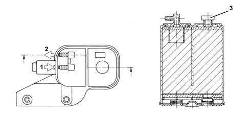

1080E evaporation control system
- Path
- Descriptions > 10 ENGINE > 1080 EXHAUST EMISSION CONTROL SYSTEM > 1080E evaporation control system
- Kind
- system description
- Applies to
- engines: 1.6 TS, 2.0 TS; all production periods
- Interactive page
- https://sloeber94.github.io/elrnDB-a147/en/#/3022423
Applies to: engines: 1.6 TS; all production periods
OPERATION
The vapours coming from the tank through the two float valves (1) are sent to the separator (2).
The vapours condensed in the separator fall back into the tank.
Uncondensed vapours are sent through the pipe (3) to the canister (4), where they are absorbed and stored by the activated charcoal.
The vapours pass to the inlet box through the solenoid (5) controlled by the fuel injection control unit.
Multi-function valves
The multi-purpose valves have the following functions:
- pressurizing the tank
- ventilating the tank
- retention
- seal in the event of roll-over

PRESSURIZING THE TANK
The tank is maintained at a pressure of 30-45 mbar by means of a valve which rests on a sealing edge.
The valve is supported by a stainless steel plate and counteracted by a spring.
When the pressure in the tank exceeds the specified value, it overcomes the resistance of the spring and the valve is able to rise, allowing vapours to flow to the canister.
When the pressure returns to the correct limits, the valve closes again.
RETENTION
Under particular driving conditions, a vacuum could be created in the tank because of:
- temperature changes
- fuel consumption.
In this case, the valve's function is to restore the pressure of the tank by allowing air in.
A fault in this function could cause the engine to miss or stall, because of difficulties in supplying the fuel pump.
This function is carried out by the 'goose beak' valve located on the multi-purpose valves.
SEAL IN THE EVENT OF ROLL-OVER
The roll-over function prevents fuel from leaking from the tank if the vehicle overturns or is on a very steep slope.
During normal driving of the vehicle (bends, acceleration, braking, etc.), the fuel is shaken up and may spill into the canister.
The car's high roll-over sensitivity prevents this spillage. the roll-over closure angle is less than 33°.
Canister
Mounted in the front right wheelarch, this consists of an activated-charcoal filter element which absorbs the fuel vapours coming from the separator.
A one-way valve allows external (scrubbing) air to enter during vapour intake.

1 - From the multi-function valve 2 - To the solenoid valve 3 - One-way scrubbing valve
Fuel vapour solenoid
It is fitted in the lower part of the intake manifold and is controlled by the injection control unit.
The function of the solenoid is to allow fuel vapours stored in the engine intake canister through to the engine intake.
If there is no supply, the solenoid is in the open position; when the ignition key is in the ON position, the solenoid closes, ready for operation.
If energized, the electromagnet (1) attacts the shutter (2) which overcomes the load of the flat spring (3) and closes the hole (4), preventing the passage of fuel vapours.

Applies to: engines: 2.0 TS; all production periods
OPERATION
The vapours coming from the tank through the two float valves (1) are sent to the separator (2).
The vapours condensed in the separator fall back into the tank.
Uncondensed vapours are sent through the pipe (3) to the canister (4), where they are absorbed and stored by the activated charcoal.
The vapours pass to the inlet box through the solenoid (5) controlled by the fuel injection control unit.
Multi-function valves
The multi-purpose valves have the following functions:
- pressurizing the tank
- ventilating the tank
- retention
- seal in the event of roll-over
PRESSURIZING THE TANK
The tank is maintained at a pressure of 30-45 mbar by means of a valve which rests on a sealing edge.
The valve is supported by a stainless steel plate and counteracted by a spring.
When the pressure in the tank exceeds the specified value, it overcomes the resistance of the spring and the valve is able to rise, allowing vapours to flow to the canister.
When the pressure returns to the correct limits, the valve closes again.
RETENTION
Under particular driving conditions, a vacuum could be created in the tank because of:
- temperature changes
- fuel consumption.
In this case, the valve's function is to restore the pressure of the tank by allowing air in.
A fault in this function could cause the engine to miss or stall, because of difficulties in supplying the fuel pump.
This function is carried out by the 'goose beak' valve located on the multi-purpose valves.
SEAL IN THE EVENT OF ROLL-OVER
The roll-over function prevents fuel from leaking from the tank if the vehicle overturns or is on a very steep slope.
During normal driving of the vehicle (bends, acceleration, braking, etc.), the fuel is shaken up and may spill into the canister.
The car's high roll-over sensitivity prevents this spillage. the roll-over closure angle is less than 33°.
Canister
Mounted in the front right wheelarch, this consists of an activated-charcoal filter element which absorbs the fuel vapours coming from the separator.
A one-way valve allows external (scrubbing) air to enter during vapour intake.
1 - From the multi-function valve 2 - To the solenoid valve 3 - One-way scrubbing valve
Fuel vapour solenoid
It is fitted in the lower part of the intake manifold and is controlled by the injection control unit.
The function of the solenoid is to allow fuel vapours stored in the engine intake canister through to the engine intake.
If there is no supply, the solenoid is in the open position; when the ignition key is in the ON position, the solenoid closes, ready for operation.
If energized, the electromagnet (1) attacts the shutter (2) which overcomes the load of the flat spring (3) and closes the hole (4), preventing the passage of fuel vapours.